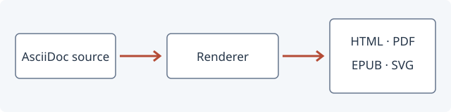

atlas deploy --environment staging --version 2.4
atlas status --watchA practical field guide to Atlas 2.4: from first deployment to incident response. This single source exercises document structure, inline substitutions, compound blocks, tables, references, images, and includes.
|
Note
|
Each engine receives the same source, attributes, include directory, and safe mode. The HTML is displayed with the same stylesheet. |
Write strong statements, careful emphasis, inline_code(), and combined emphasis.
Use marked text, small text, underlining, strikethrough, H2O, and x2.
Typographic substitutions include ©, ®, ™, an ellipsis… and an arrow →.
Constrained and unconstrained formatting can appear inside a word: unbreakable.
Open , press Ctrl+Shift+P, then choose Create. Visit the project site or contact operations. The deployment procedure is in Deployment and nested lists; our capacity table summarizes resource allocation. The test environment is reproducible.[1] The same environment is used for recovery drills.[1]
One control plane.
Three worker nodes.
One reproducible release.
Validate the target cluster.
Check available capacity.
Confirm that the staging namespace exists.
Deploy the application.
atlas deploy --environment staging --version 2.4
atlas status --watch|
Tip
|
Keep the previous release until health checks have completed. |
Promote the verified release.
Control plane
API gateway
Scheduler
Queue monitoring
Retry policy
Workers
Storage adapter
Rendering service
✓ Build reproducible artifacts
✓ Verify the source document
❏ Review the staging deployment
❏ Promote to production
Accepts requests and dispatches jobs.
Converts one input into an output artifact.
A versioned HTML, PDF, EPUB, or SVG result.
| RTO |
Recovery time objective: 15 minutes. |
| RPO |
Recovery point objective: 5 minutes. |
| Component | Replicas | CPU | Purpose |
|---|---|---|---|
Gateway |
2 |
1 |
Accept and validate requests |
Scheduler |
1 |
1 |
Distribute work fairly |
Worker |
3 |
4 |
Render the document |
Total reserved capacity |
6 |
Release 2.4 |
|
| Stage | Verification | Owner | ||
|---|---|---|---|---|
Build |
|
Engineering |
||
Check checksums and the license. |
Release |
|||
Review |
A compound cell can contain formatting and a second paragraph.
|
Operations |
| Region | Nodes | State |
|---|---|---|
Sydney |
3 |
Ready |
Frankfurt |
2 |
Ready |
fn main() -> Result<(), Box<dyn std::error::Error>> {
let source = std::fs::read_to_string("guide.adoc")?; // (1)
let html = render(&source)?; // (2)
std::fs::write("guide.html", html)?; // (3)
Ok(())
}Read the original UTF-8 source.
Convert it with the selected renderer.
Save the generated document.
INPUT OUTPUT guide.adoc --> guide.html *not bold* <not an element>
product = Atlas release = 2.4
|
Note
|
A note adds context without interrupting the procedure. |
|
Tip
|
Cache immutable assets between builds. |
|
Important
|
Verify the generated document before publishing it. |
|
Caution
|
Changing an identifier can break an existing cross-reference. |
|
Warning
|
This sample is documentation, not a production deployment script. |
|
Important
|
Before switching traffic
Run both checks:
|
A release is ready when the checks pass.
{"release":"2.4","verified":true,"targets":["html","pdf","epub","svg"]}A document is useful when its reader can act with confidence.
Read the signal, check the source, leave a clear trail.

Figure The document processing pipeline is a local SVG image; no diagram extension or network service is required.
The following section is expanded from a separate file with a tag selector and a level offset.
This section comes from includes/recovery.adoc.
Restore the most recent verified artifact.
Re-run the readiness checks.
Record the outcome in the incident log.
|
Tip
|
An include should behave like source written directly in the parent document. Its section numbering and references should remain consistent. |
This sentence is visible because the release attribute is set to 2.4.
This release copy omits draft-only material.
The numeric release gate selects the 2.4 documentation.
The procedure links back to Deployment and nested lists and uses the terms in Typography and navigation. For background, consult [ATLAS-24].